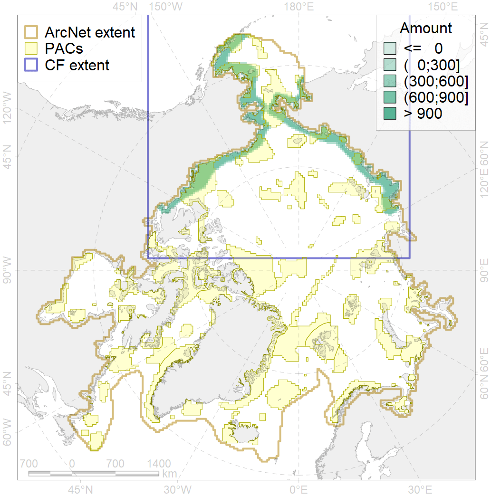
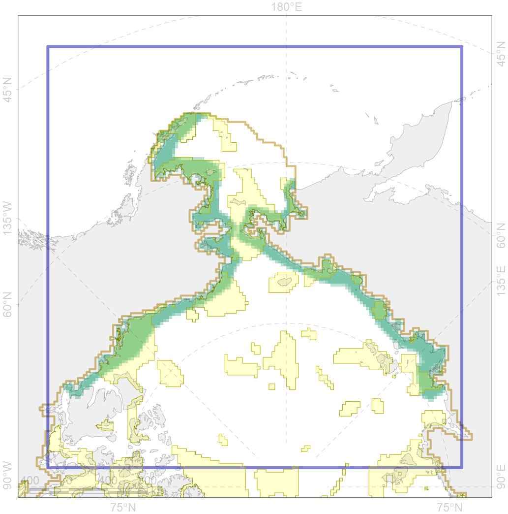

4024

| CF ID | 4024 |
| CF Name | Distribution of the Chum Salmon (Oncorhynchus keta) |
| Time Period | 1950-2000s |
| Source(s) | Scott, Crossman, 1973; Chereshnev, 2008; Reshetnikov, 2010 |
| Seasonality | May-November |
| Depth Horizon | 0-60 |
| Methodology | Compiled from literature sources based on field observations |
| Author Name | N. Chernova |
| Notes | |
| Conservation Target Set in the Scenario | 0.06 |
| Conservation Target Achieved in the Scenario | 0.506 (Scenario: 843.6%) |
| PAC ID | Proportion in the PAC | Contribution to ArcNet Target Achievement | PAC’s Contribution to the Achieved Target |
|---|---|---|---|
| 1 | 4.6% | 75.0% | 8.9% |
| 2 | 0.2% | 2.7% | 0.3% |
| 3 | 10.4% | 161.7% | 19.2% |
| 4 | 1.9% | 25.0% | 3.0% |
| 5 | 7.8% | 116.7% | 13.8% |
| 6 | 0.1% | 2.1% | 0.2% |
| 8 | 2.8% | 38.0% | 4.5% |
| 9 | 0.8% | 7.7% | 0.9% |
| 10 | 2.1% | 27.3% | 3.2% |
| 12 | 3.1% | 48.5% | 5.7% |
| 60 | 3.8% | 49.0% | 5.8% |
| 61 | 0.1% | 1.5% | 0.2% |
| 62 | 13.7% | 216.0% | 25.6% |
| inner | 51.4% | 771.3% | 91.4% |
| outer | 48.6% | 72.3% | 8.6% |